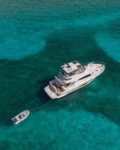

Provisioning and Prepping for a Crossing to the Bahamas
From our home waters around Palm Beach and Jupiter, the Bahamas are right there. On a clear day you can almost talk yourself into thinking it is a short hop. It can be one of the easiest, most rewarding runs you will ever make, but only if you treat the Gulf Stream and the open water between with the respect they deserve. The crossing is short. The consequences of doing it unprepared are not.
Here is how I prep owners for their first crossing, and what I still run through every time myself.
Fuel range planning and reserves
Start with honest fuel math, because the Stream does not care about your optimism. Know your true range at cruise, not the brochure number, and build it from your own fuel burn at the speed you will actually run in the conditions you expect. Then apply the old offshore rule of thirds as a starting frame: roughly a third out, a third back, and a third in reserve. For a straightforward crossing to Bimini or West End you will not need all of that, but the discipline of always landing with a real reserve is what keeps you safe when the wind picks up, the current sets you off track, or your plans change
A few specifics that matter once you are over there: fuel in the islands is more expensive and not always available where or when you expect, so top off on the Florida side and do not count on filling up at every stop. Carry the right spares and filters, and know your fuel is clean before you leave, because a clogged filter offshore is a much bigger problem than at the dock.
Documents, checklist, and customs basics
The paperwork side is simple if you do it ahead and miserable if you wing it. You are leaving one country and entering another, so bring the documents to prove who you are and what the boat is.
At a minimum, plan on valid passports for everyone aboard, your vessel’s current registration or Coast Guard documentation, and proof of current insurance. If you are not the owner of the vessel, you will need documentation proving that you have permission to run the boat. Also, if your boat is owned by an LLC that you control, you’ll need your corporate documents.
The Bahamas requires you to clear in on arrival: you fly the yellow quarantine flag, the captain goes ashore alone to Customs and Immigration at a designated port of entry, and you complete a cruising permit and immigration paperwork for the boat and crew. The Bahamas has moved much of this to an online Click2Clear.com system, so set up and pre-fill what you can before you leave the dock and you will save yourself a hot afternoon standing in line. I used Click2Clear in April when I took my boat over. I cleared in at West End, and I was in and out of the customs/immigration office in under 5 minutes!
The Bahamas changed their fee structure last year and tweaked it further this spring. I wrote an article recently about the current rate structure. Click here to read that article. In short, you will need to decide how long you want to stay in the Bahamas on this trip and think about whether or not you plan to make multiple trips over to the Bahamas. Your current and future Bahamas cruising plans will inform your decision on what program to sign up for.
Coming home, you clear back into the United States, and you will want CBP's ROAM app or a local reporting plan sorted in advance. None of this is hard. It is just unforgiving if you show up without the right papers, so build a documents checklist and verify it the night before, not at the fuel dock!
"The crossing itself is rarely the hard part. The hard part is the prep you either did or did not do before you left the dock! Clark Haley, Haley Yachts

By the way, If your boat is over 50 feet in length, you are now required to have an AIS transceiver.
For the latest information regarding Bahamas Boating Regulations, Check this website: https://www.bahamas.com/getting-here/boating/boat-regulations
Safety gear and a real float plan
You are going offshore, out of sight of land, into water that can turn quickly. Your safety kit should reflect that, not your inshore habits. Make sure you have properly fitted life jackets for everyone, a registered EPIRB, flares and visual signals, a VHF with DSC and a backup handheld, and a ditch bag you can grab in seconds. Check that your bilge pumps work, your through-hulls are sound, and your ground tackle is ready, because anchoring out is part of the Bahamas experience.
Then file a float plan with someone ashore: who is aboard, your route, your departure and expected arrival, and when to raise the alarm if they do not hear from you. It is the cheapest safety device on the boat and the one people skip most.
Weather windows and the Gulf Stream
This is the single most important decision of the whole trip, and it is non-negotiable: never cross in a north wind. The Gulf Stream runs hard to the north, and when the wind blows out of the north against that current, it stacks up steep, dangerous, closely spaced seas that can turn a pleasant crossing into a beating, or worse. Wait for a window with no significant north component, ideally light to moderate winds from the east or southeast, and a settled forecast on both ends.
Good crossings are made in the early morning calm. Watch the forecast for days ahead, pick your window, and have the patience to wait for it. The Bahamas are not going anywhere, and the best captains I know are the ones most willing to sit at the dock one more day rather than force a bad crossing. Provision with a little flexibility built in so a one-day delay does not blow up your trip.
The right boat makes the whole thing easier
A crossing is far more comfortable on a boat with the range, the sea-keeping, and the systems to do it well. That is exactly why so many of the boats we sell, including the Riviera range, are built to handle a Florida day and a Bahamas week with equal ease. If you are thinking about island cruising and wondering whether your current boat is the right tool, or what would be, that is a great conversation to have before you plan the trip.
Whether you are prepping your boat for its first crossing or shopping for one built to make the run in comfort, I am glad to help. Reach out to Clark Haley at Haley Yachts and let's talk through your boat, your plans, and the right way to get you safely to the islands and home again.